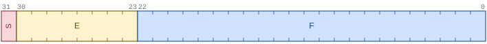
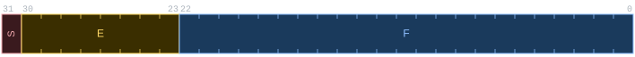
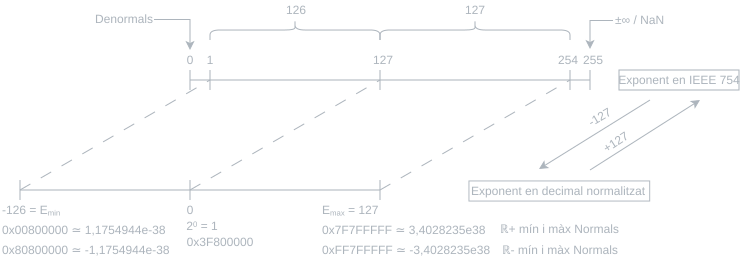
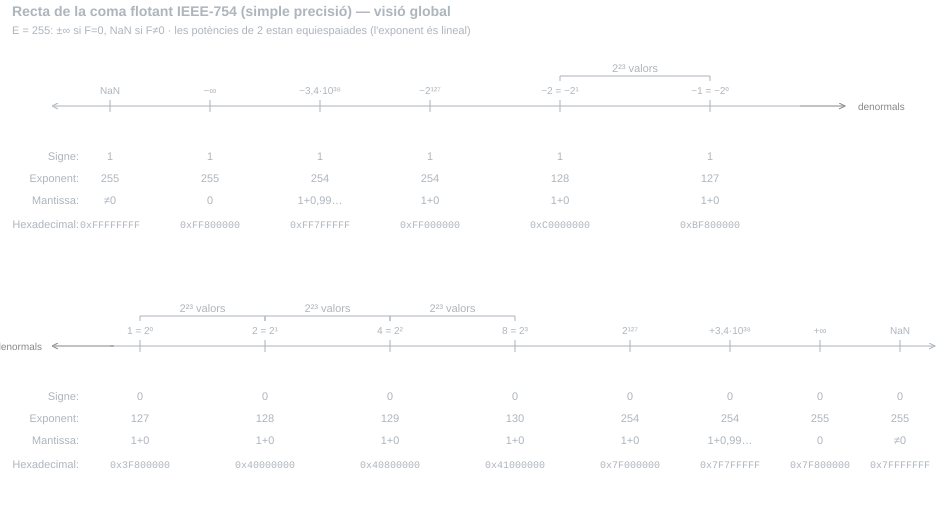
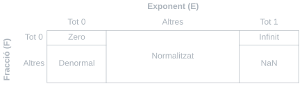
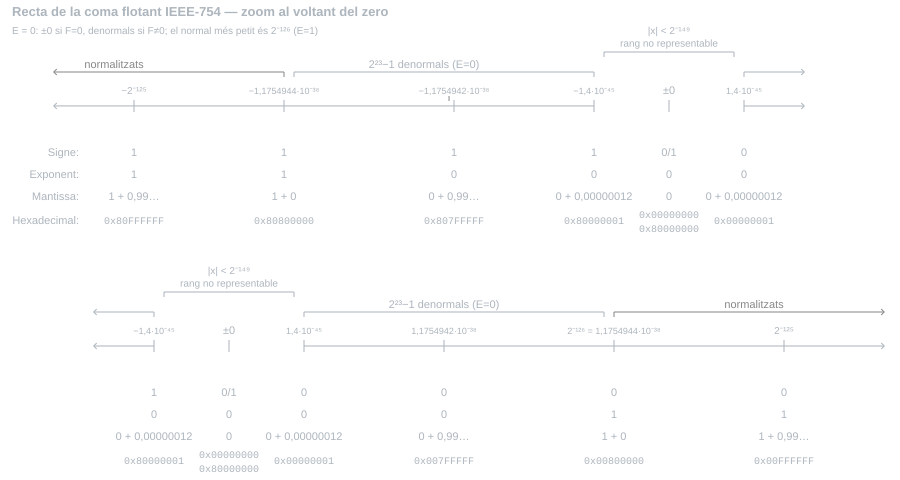
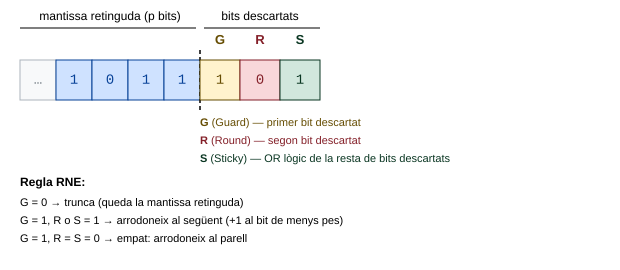
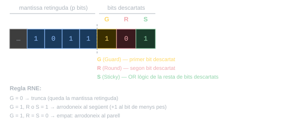

Tema 5: Coma flotant
5.1 Representació en coma flotant
5.1.1 Notació científica normalitzada
La notació científica normalitzada és un sistema de representació de nombres reals que separa clarament la magnitud del nombre (els seus dígits significatius) de la seva escala (la posició de la coma). Un nombre \(v\) s’escriu en la forma:
\[v = m \times 10^n\]
on \(n\) (l’exponent) és un enter i \(m\) (la mantissa) satisfà \(1 \leq |m| < 10\), amb almenys un dígit fraccionari. Aquesta restricció s’anomena condició de normalització i garanteix una representació única per a cada nombre.
La notació científica normalitzada presenta dos avantatges respecte de la representació decimal ordinària. D’una banda, és més compacta: \(2{,}34 \times 10^8\) és més llegible que \(234\,000\,000\). D’altra banda, fa explícit el nombre de dígits significatius: \(2{,}34 \times 10^8\) indica clarament tres dígits significatius, mentre que \(234\,000\,000\) és ambigu (poden ser tres, o pot ser que el nombre sigui exacte fins a les unitats). El terme coma flotant fa referència precisament a aquest mecanisme: la coma «es desplaça» cap a l’esquerra o cap a la dreta en funció del valor de l’exponent.
En dispositius electrònics, els tres caràcters ×10 es substitueixen habitualment per la lletra E, que separa mantissa i exponent: \(2{,}34\text{E}8\).
Expressa els nombres següents en notació científica normalitzada:
| Nombre | Notació científica normalitzada |
|---|---|
| \(234\,000\,000\) | \(2{,}34 \times 10^{8}\) |
| \(0{,}000\,468\) | \(4{,}68 \times 10^{-4}\) |
| \(-0{,}0234 \times 10^{10}\) | \(-2{,}34 \times 10^{8}\) |
5.1.2 Representació binària
Els nombres en coma flotant en base 2 segueixen el mateix principi que la notació científica normalitzada, amb la base 2 en lloc de la base 10. La condició de normalització imposa que la part entera de la mantissa sigui exactament 1, ja que en base 2 l’únic dígit no nul és l’1:
\[v = \pm 1{,}\underbrace{b_{-1}b_{-2}\ldots b_{-p}}_{\text{fracció }F} \times 2^e\]
on \(e\) (l’exponent) és un enter i \(F\) és la part fraccionària de la mantissa.
Com que la condició de normalització garanteix que el bit a l’esquerra de la coma és sempre 1, aquest bit no s’emmagatzema a la codificació: és el bit ocult (hidden bit). El maquinari el torna a afegir implícitament en qualsevol operació.
Cal tenir-lo en compte en tots els càlculs: si el camp de fracció \(F\) té \(p-1\) bits emmagatzemats, la mantissa completa té \(p\) bits significatius (els \(p-1\) bits de \(F\) més el bit ocult).
Els únics casos en què el bit ocult no s’aplica són els nombres denormals i el zero (Secció 5.1.6).
5.1.3 L’estàndard IEEE 754
Fins als anys 80, cada fabricant de processadors adoptava el seu propi format de coma flotant, amb decisions diverses sobre el nombre de bits de mantissa i exponent, i fins i tot sobre la base de la potència. La incompatibilitat entre sistemes dificultava l’intercanvi de dades i la portabilitat del programari. El 1985, l’Institut d’Enginyers Elèctrics i Electrònics (Institute of Electrical and Electronics Engineers, IEEE) va publicar l’estàndard IEEE 754, que no sols defineix el format de representació sinó també les operacions aritmètiques, l’arrodoniment i el tractament de les excepcions. L’estàndard s’ha revisat i ampliat posteriorment (la darrera revisió és de 2019).
A EC s’estudia el format de simple precisió (32 bits), que correspon al tipus float de C.
| Simple precisió | Doble precisió | |
|---|---|---|
| Tipus C | float |
double |
| Mida total | 32 bits | 64 bits |
| Signe (S) | 1 bit | 1 bit |
| Exponent (E) | 8 bits | 11 bits |
| Fracció (F) | 23 bits | 52 bits |
| Precisió (amb bit ocult) | 24 bits | 53 bits |
| Biaix de l’exponent | 127 | 1023 |
| Rang de l’exponent \(e\) | \([-126,\ +127]\) | \([-1022,\ +1023]\) |
A EC, s’usa exclusivament el format de simple precisió. Totes les operacions, exemples i problemes fan referència a aquest format llevat que s’indiqui explícitament el contrari.
Els tres camps de bits del format de simple precisió s’organitzen de la manera següent:
\[\underbrace{S}_{1}\;\underbrace{E_7 E_6 \ldots E_0}_{8}\;\underbrace{F_{22} F_{21} \ldots F_0}_{23}\]


5.1.3.1 Signe (S)
El bit de signe \(S\) indica el signe del nombre: \(S = 0\) per a valors positius i \(S = 1\) per a valors negatius.
5.1.3.2 Fracció (F)
El camp de fracció \(F\) emmagatzema els \(p-1 = 23\) bits de la part fraccionària de la mantissa normalitzada. La mantissa completa s’obté afegint el bit ocult: \(1{,}F\).
5.1.3.3 Exponent (E)
L’exponent és un enter amb signe, però no es codifica en Ca2. S’emmagatzema en representació esbiaixada (biased exponent), amb biaix 127, és a dir, en excés a 127 en el sentit de la Secció 1.5.2: el valor emmagatzemat \(E_u\) és el natural que satisfà
\[e = E_u - 127 \qquad \Longleftrightarrow \qquad E_u = e + 127 \tag{5.1}\]
on \(e\) és el valor enter de l’exponent. Per exemple, \(e = 0 \Rightarrow E_u = 127 = 0111\,1111_2\); \(e = 1 \Rightarrow E_u = 128 = 1000\,0000_2\).
La representació esbiaixada (Secció 1.5.2 i EC 1.2) garanteix que l’ordre numèric dels valors explícits \(E_u\) (interpretats com a naturals) coincideix amb l’ordre dels exponents enters \(e\). Això permet comparar nombres en coma flotant amb el mateix circuit que compara naturals quan els dos operands tenen el mateix signe (en particular, quan tots dos són positius), amb dues condicions:
- Els bits de l’exponent ocupen la part alta del nombre, immediatament després del signe, i els de la fracció ocupen la part baixa. Així, a iguals exponents guanya el de fracció major; entre exponents diferents guanya el de l’exponent major.
- L’exponent es codifica esbiaixat (no en Ca2), de manera que la correspondència entre representacions i valors és monòtona creixent.
El valor complet representat per una codificació normalitzada és:
\[v = (-1)^S \times 1{,}F \times 2^{E_u - 127} \tag{5.2}\]
La Figura 5.2 mostra la correspondència entre l’exponent emmagatzemat \(E_u\) i el valor real \(e = E_u - 127\), i n’indica les zones reservades per a denormals i codificacions especials.

Codifica el nombre \(v = -1029{,}68\) en format IEEE 754 de simple precisió i calcula l’error de representació.
a) Part entera a binari (divisions successives):
\[1029 = 1000\,0000\,0101_2 \quad (11 \text{ bits})\]
b) Part fraccionària a binari (multiplicacions successives per 2 i extracció de la part entera de cada resultat com a bit de la representació binària de la part fraccionària):
\[0{,}68 \rightarrow 1{,}36 \rightarrow 0{,}72 \rightarrow 1{,}44 \rightarrow 0{,}88 \rightarrow 1{,}76 \rightarrow 1{,}52 \rightarrow 1{,}04 \rightarrow 0{,}08 \rightarrow \ldots\]
\[(0 \quad \rightarrow 1 \quad \rightarrow 0 \quad \rightarrow 1 \quad \rightarrow 0 \quad \rightarrow 1 \quad \rightarrow 1 \quad \rightarrow 1 \quad \rightarrow 0 \quad \rightarrow \ldots)\]
\[0{,}16 \rightarrow 0{,}32 \rightarrow 0{,}64 \rightarrow 1{,}28 \rightarrow 0{,}56 \rightarrow 1{,}12 \rightarrow 0{,}24 \rightarrow 0{,}48 \rightarrow 0{,}96 \rightarrow 1{,}92 \rightarrow \ldots\]
\[(0 \quad \rightarrow 0 \quad \rightarrow 0 \quad \rightarrow 1 \quad \rightarrow 0 \quad \rightarrow 1 \quad \rightarrow 0 \quad \rightarrow 0 \quad \rightarrow 0 \quad \rightarrow 1 \quad \rightarrow \ldots)\]
\(0{,}68 = 0{,}1010\,1110\,0001\,0100\,01\ldots_2\). Per tant:
\[v = -1000\,0000\,101{,}1010\,1110\,0001\,0100\,01\ldots_2\]
c) Normalitzar la mantissa:
\[v = -1{,}0000\,0001\,0110\,1011\,1000\,0101\,0001\ldots_2 \times 2^{10}\]
d) Arrodonir a 24 bits significatius (23 bits de fracció + bit ocult).
Els bits a descartar comencen per 10001...; com que el primer bit descartat és 1 i n’hi ha d’altres a la dreta, cal arrodonir al valor següent (sumar 1 al bit de menys pes conservat). El criteri general d’arrodoniment es formalitza a Secció 5.1.7; en aquest cas:
\[\begin{array}{r} 1{,}0000\,0001\,0110\,1011\,1000\,010\\ +\hspace{9.3em}1\\ \hline 1{,}0000\,0001\,0110\,1011\,1000\,011 \end{array}\]
e) Codificar l’exponent en forma esbiaixada (biaix 127):
\[E_u = 10 + 127 = 137 = 1000\,1001_2\]
f) Ajuntar S, E, F (descartant el bit ocult de la fracció):
\[V = \underbrace{1}_{S}\;\underbrace{1000\,1001}_{E}\;\underbrace{0000\,0001\,0110\,1011\,1000\,011}_{F}\]
\[V = 1100\,0100\,1000\,0000\,1011\,0101\,1100\,0011_2 = \texttt{0xC480B5C3}\]
Solució:
\[V = \texttt{0xC480B5C3}\]
g) Error de representació:
L’error de representació és la diferència entre el valor realment emmagatzemat i el valor exacte original. Com que el valor exacte té infinits bits en binari, és més senzill calcular aquesta diferència en decimal. Desfent la normalització de la mantissa arrodonida (coma 10 posicions a la dreta), el valor emmagatzemat (en valor absolut) és:
\[1{,}0000\,0001\,0110\,1011\,1000\,011_2 \times 2^{10} = 1000\,0000\,101{,}1010\,1110\,0001\,1_2\]
La part entera (\(1000\,0000\,101_2 = 1029\)) no ha canviat amb l’arrodoniment: l’error és, doncs, la diferència entre les parts fraccionàries. La part fraccionària emmagatzemada val:
\[0{,}1010\,1110\,0001\,1_2 = 1\,0101\,1100\,0011_2 \times 2^{-13} = \frac{5571}{8192}\]
\[\varepsilon = \left|\frac{5571}{8192} - 0{,}68\right| = \frac{5571 - 0{,}68 \times 8192}{8192} = \frac{0{,}44}{8192} \approx 5{,}371 \times 10^{-5}\]
Solució:
\[\varepsilon = 5{,}371 \times 10^{-5}\]
Converteix a decimal el nombre 0x45814140.
a) Descompondre en camps S, E, F:
\[\texttt{0x45814140} = 0\;|\;1000\,1011\;|\;0000\,0010\,1000\,0010\,1000\,000_2\]
b) Descodificar signe, exponent i mantissa:
- \(S = 0\) (positiu).
- \(E_u = 1000\,1011_2 = 139 \Rightarrow e = 139 - 127 = 12\).
- Mantissa (amb bit ocult): \(1{,}0000\,0010\,1000\,0010\,1000\,000_2\).
\[v = +1{,}0000\,0010\,1000\,0010\,1000\,000_2 \times 2^{12}\]
c) Eliminar la potència (desplaçar la coma 12 posicions a la dreta):
\[v = 1\,0000\,0010\,1000{,}0010\,1000\,000_2\]
d) Convertir la part entera:
\[1\,0000\,0010\,1000_2 = 2^{12} + 2^5 + 2^3 = 4096 + 32 + 8 = 4136\]
e) Convertir la part fraccionària:
\[0{,}0010\,1000\,000_2 = 101_2 \times 2^{-5} = 5 / 32 = 0{,}15625\]
Solució:
\[v = 4136{,}15625\]
5.1.4 Rang i precisió
El rang de la representació és l’interval \([-v_{\max},\ +v_{\max}]\), on \(v_{\max}\) és el nombre positiu més gran representable. S’obté amb la màxima fracció (tots els bits a 1) i el màxim exponent (\(e = 127\) en simple precisió):
\[v_{\max} = (2 - 2^{-23}) \times 2^{127} \approx 3{,}4 \times 10^{38}\]
Si el resultat d’una operació té un exponent \(e > 127\), no és representable i es produeix una excepció de sobreeiximent (overflow).
La precisió d’una representació és el seu nombre de bits significatius. En simple precisió, la mantissa normalitzada té 24 bits significatius (23 bits de fracció emmagatzemats més el bit ocult), de manera que la precisió és de 24 bits.
Donat un nombre fix de bits, augmentar la precisió (més bits de fracció) redueix el rang (menys bits d’exponent) i viceversa. El format de simple precisió (8 bits d’exponent, 23 de fracció) és el compromís adoptat per l’estàndard IEEE 754 per a aplicacions de propòsit general.

5.1.5 Error de representació i subdesbordament
El resultat exacte \(v\) d’una operació pot no ser representable amb un nombre finit de bits de fracció. En aquest cas cal aproximar-lo per un dels dos valors representables més pròxims \(v_0 < v < v_1\). L’error absolut de representació es defineix com \(\varepsilon = |v - v_0|\) i l’error relatiu com \(\eta = \varepsilon\,/\,|v|\).
Per a un nombre normalitzat qualsevol de la forma \(v_0 = m \times 2^e\), el valor representable següent és \(v_1 = (m + 2^{-23}) \times 2^e\), de manera que l’error absolut màxim és:
\[\varepsilon_{\max} < 2^{e-23}\]
Dividint per \(v_0\) i tenint en compte que \(m \geq 1{,}0\), l’error relatiu queda acotat uniformement (Aprofundiment 5.1):
\[\eta_{\max} < 2^{-23} = 1\ \text{ULP}\]
La quantitat \(1\ \text{ULP}\) (Unit in the Last Place) és el valor \(0{,}0\ldots001_2\) amb un sol bit a 1 a la posició de menor pes de la mantissa. La fita \(\eta_{\max} < 2^{-23}\) és independent del valor de \(v\) i depèn exclusivament de la precisió de la mantissa.
Hi ha una excepció important a la fita d’error relatiu. Quan el valor absolut del resultat és inferior al mínim positiu normalitzat representable \(2^{E_{\min}} = 2^{-126}\), si s’aproxima simplement per zero l’error relatiu és \(\eta = 1\), és a dir, de l’ordre del 100%. Això pot invalidar completament el significat del resultat.
Quan el maquinari detecta aquesta situació genera una excepció de subdesbordament (underflow), que permet al programari tractar-la adequadament. Els nombres denormals (Secció 5.1.6) són el mecanisme que defineix l’IEEE 754 per reduir aquest error de forma gradual.
Donat \(v_0 = m \times 2^e\) i \(v_1 = (m + 2^{-23}) \times 2^e\), l’error absolut màxim a l’interval \((v_0, v_1)\) és:
\[\varepsilon_{\max} < |v_1 - v_0| = 2^{-23} \times 2^e = 2^{e-23}\]
Per a l’error relatiu, el cas pitjor dins l’interval és el valor de menor magnitud, que és \(v_0\):
\[\eta_{\max} < \frac{\varepsilon_{\max}}{|v_0|} = \frac{2^{e-23}}{m \times 2^e} = \frac{2^{-23}}{m}\]
Com que la mantissa normalitzada satisfà \(m \geq 1{,}0\), resulta:
\[\eta_{\max} < 2^{-23} = 1\ \text{ULP} \approx 1{,}19 \times 10^{-7}\]
Aquesta fita és independent de \(e\) i de \(m\): l’error relatiu de representació és uniformement acotat per \(1\ \text{ULP}\) arreu del rang normalitzat.
5.1.6 Codificacions especials
L’estàndard IEEE 754 reserva dos valors del camp d’exponent per a codificacions especials: \(E = 0000\,0000_2\) (tot zeros) i \(E = 1111\,1111_2\) (tot uns). El rang efectiu de l’exponent queda reduït a \([-126,\ +127]\) en simple precisió.
| Exponent \(E\) | Fracció \(F\) | Interpretació |
|---|---|---|
| \(0000\,0000\) | \(000\ldots0\) | Zero (\(\pm 0\)) |
| \(0000\,0000\) | \(\neq 000\ldots0\) | Denormal \((\pm 0{,}F \times 2^{-126})\) |
| \(0000\,0001\) a \(1111\,1110\) | qualsevol | Normalitzat \((\pm 1{,}F \times 2^{e})\) |
| \(1111\,1111\) | \(000\ldots0\) | Infinit (\(\pm\infty\)) |
| \(1111\,1111\) | \(\neq 000\ldots0\) | NaN |

5.1.6.1 Zero
Els formats normalitzats no poden representar el zero, ja que el bit ocult imposa \(m \geq 1{,}0\). El zero es codifica convencionalment amb tots els bits d’exponent i fracció a zero. A causa del bit de signe, existeixen dues representacions: \(+0\) i \(-0\). L’estàndard defineix que \(+0 = -0\) en les comparacions.
5.1.6.2 Denormals
Com s’ha vist a Secció 5.1.5, quan \(|v| < 2^{-126}\) l’error relatiu pot arribar al 100% si s’arrodoneix a zero. Els nombres denormals (o subnormals) cobreixen l’interval \((0,\ 2^{-126})\) amb nombres de la forma:
\[v = \pm 0{,}F \times 2^{-126} \qquad (F \neq 0)\]
A diferència dels nombres normalitzats, no hi ha bit ocult: la part entera de la mantissa és \(0\), no \(1\). L’exponent implícit dels denormals és sempre \(e = -126\): no s’obté aplicant la fórmula \(e = E_u - 127\) (que amb \(E_u = 0\) donaria \(-127\)), sinó que és, per definició, el mateix exponent que el del normal més petit (\(2^{-126}\)).
Amb denormals, la fita d’error absolut dins l’interval \((0,\ 2^{-126})\) és la mateixa que a l’interval normalitzat adjacent \((2^{-126},\ 2^{-125})\):
\[\varepsilon_{\max} < 2^{-149}\]
L’error relatiu ja no està uniformement acotat, però creix de forma gradual a mesura que \(v\) s’acosta a zero, en lloc d’augmentar de cop com passaria sense denormals. Per aquesta raó el mecanisme es coneix també com a subdesbordament gradual (gradual underflow).
En simple precisió, la fita d’error relatiu és \(2^{-23}\) a l’extrem superior de l’interval \((0,\ 2^{-126})\) i creix progressivament fins a \(2^0 = 1\) a mesura que \(v\) s’acosta a zero i la mantissa no-normalitzada perd dígits significatius.
Per a cada exponent normalitzat \(E \in [1, 254]\), la fracció \(F\) pren els \(2^{23}\) valors possibles \(\{0, 1, \ldots, 2^{23}-1\}\): \(F = 0\) correspon a la potència de 2 exacta \((\pm 1{,}0 \times 2^e)\), un nombre normalitzat vàlid.
Per als denormals (\(E = 0\)), el rang de \(F\) és el mateix, però \(F = 0\) codifica \(\pm 0\), que no és un denormal. Per tant, hi ha \(2^{23} - 1\) denormals per signe, enfront dels \(2^{23}\) valors per exponent dels normals. Aquesta asimetria és visible comparant Figura 5.5 amb Figura 5.3.

5.1.6.3 Infinit
L’infinit s’incorpora a l’aritmètica per raons pràctiques. Considerant l’expressió \(1\,/\,(1 + 100/x)\) per a valors de \(x\) pròxims a zero: sense infinit, el càlcul \(100/x\) produiria una excepció de sobreeiximent que avortaria el programa, tot i que el resultat final de l’expressió convergeix a zero. Amb infinit, la seqüència d’operacions és \(100/x = \pm\infty\), \(1 + \infty = \infty\), \(1/\infty = 0\), i el programa continua sense excepcions.
L’infinit es codifica amb tots els bits d’exponent a 1 i tots els de fracció a zero. S’apliquen regles aritmètiques senzilles: \(1/0 = \infty\), \(1/\infty = 0\), \(x + \infty = \infty\), etc.
5.1.6.4 NaN
Algunes operacions no produeixen cap valor real vàlid: \(\sqrt{-1}\), \(\log(-1)\), \(0/0\), \(\infty - \infty\), \(0 \times \infty\). En lloc d’avortar l’execució, el resultat pren la codificació especial NaN (Not a Number), i l’execució continua. Qualsevol operació posterior amb un operand NaN produeix un altre NaN, de manera que l’error es propaga fins al resultat final, on el programa pot fer un únic test.
Un NaN es codifica amb tots els bits d’exponent a 1 i almenys un bit de fracció no nul (per distingir-lo de l’infinit). El valor concret de la fracció no està fixat per l’estàndard.
5.1.7 Arrodoniment
Quan el resultat exacte \(v\) d’una operació no és representable, cal triar entre els dos valors representables \(v_0 < v < v_1\) més pròxims. Aquesta aproximació s’anomena arrodoniment. L’IEEE 754 (revisió de 2008) defineix cinc modes; els quatre d’ús més habitual són:
| Mode | Criteri |
|---|---|
| Al més pròxim (per defecte) | El valor representable més proper a \(v\); en cas d’empat, el parell |
| A zero | El valor de menor magnitud (truncament) |
| A \(+\infty\) | El valor representable major |
| A \(-\infty\) | El valor representable menor |
El mode per defecte és l’arrodoniment al més pròxim (Round to Nearest Even, RNE). Proporciona l’error mínim possible i, en el cas equidistant, tria el valor parell (el que té el bit de menor pes a 0) per evitar biaixos sistemàtics en cadenes llargues de càlculs.
Els modes d’arrodoniment a \(+\infty\) i a \(-\infty\) s’usen conjuntament en aritmètica d’intervals, una tècnica que acota els errors d’arrodoniment per garantir la fiabilitat dels resultats numèrics. L’estàndard inclou encara un cinquè mode, al més pròxim amb empat cap a la magnitud major (RMM), poc emprat; RISC-V implementa els cinc modes al registre fcsr (RISC-V 5.3).
5.1.7.1 Bits de guarda
Quan el resultat exacte d’una operació té més bits que la mantissa, els bits sobrants (els bits de guarda) determinen com s’arrodoneix. N’hi ha prou amb tres:
- G (Guard): el primer bit descartat.
- R (Round): el segon bit descartat.
- S (Sticky): l’OR lògic de la resta de bits descartats.


La regla RNE en funció de \(G\), \(R\) i \(S\) és:
| \(G\) | \(R\) | \(S\) | Acció |
|---|---|---|---|
| 0 | — | — | A l’anterior (truncar) |
| 1 | 0 | 0 | Empat → al parell |
| 1 | 1 | — | Al següent (sumar 1 ULP) |
| 1 | 0 | 1 | Al següent (sumar 1 ULP) |
Arrodoneix les mantisses de 6 bits següents a 3 bits (els 3 bits descartats són directament \(G\), \(R\) i \(S\)):
| Valor exacte | \(G\,R\,S\) | Criteri | Resultat |
|---|---|---|---|
| \(101{,}010\) | \(0\;1\;0\) | \(G=0\) → a l’anterior | \(101\) |
| \(101{,}011\) | \(0\;1\;1\) | \(G=0\) → a l’anterior | \(101\) |
| \(101{,}101\) | \(1\;0\;1\) | \(G=1\), \(R\) o \(S=1\) → al següent | \(110\) |
| \(101{,}100\) | \(1\;0\;0\) | \(G=1\), \(R=S=0\) → empat → al parell (\(110\)) | \(110\) |
| \(100{,}100\) | \(1\;0\;0\) | \(G=1\), \(R=S=0\) → empat → al parell (\(100\)) | \(100\) |
Durant una suma o resta, la mantissa del sumand de menor magnitud es desplaça a la dreta per igualar els exponents, i alguns bits queden fora de la mantissa de \(p\) bits. Descartar-los introdueix error; conservar-los tots requeriria un sumador de mida arbitrària. Es demostra que els tres bits \(G\), \(R\) i \(S\) (Secció 5.1.7.1) basten per obtenir exactament el mateix resultat arrodonit que amb tots els bits: \(G\) pot incorporar-se a la mantissa en normalitzar, \(R\) decideix l’arrodoniment i \(S\) (l’OR de la resta) distingeix el cas equidistant.
Exemple (precisió \(p = 6\) bits):
Amb tots els bits, el resultat arrodonit és idèntic: \(1{,}11101\).
5.2 Operacions en coma flotant
5.2.1 Suma i resta
L’algorisme de suma i resta en coma flotant segueix cinc passos:
- Igualar els exponents al major dels dos operands, desplaçant a la dreta la mantissa del de menor magnitud.
- Sumar o restar les mantisses segons els signes dels operands.
- Normalitzar el resultat (desplaçar la mantissa fins que la part entera sigui 1, ajustant l’exponent en conseqüència). Cal comprovar sobreeiximent/subdesbordament.
- Arrodonir la mantissa a \(p\) bits.
- Codificar signe, exponent i fracció.
Calcula \(z = x + y\) amb \(x = 9{,}999 \times 10^1\) i \(y = 1{,}680 \times 10^{-1}\), amb 4 dígits de precisió a la mantissa.
Pas 1. Igualar exponents (al major, \(e = 1\)):
\[y = 1{,}680 \times 10^{-1} = 0{,}01680 \times 10^1\]
Pas 2. Sumar les mantisses:
\[\begin{array}{r} 9{,}999 \\ +\ 0{,}01680 \\ \hline 10{,}01580 \end{array} \times 10^1\]
Pas 3. Normalitzar:
\[z = 1{,}001580 \times 10^2 \qquad (e = 2 \in [-99,+99],\ \text{cap excepció})\]
Pas 4. Arrodonir a 4 dígits (dígits descartats en negreta: \(\mathbf{580}\); primer dígit descartat \(\geq 5\) → al següent):
\[z \approx 1{,}002 \times 10^2\]
Calcula \(z = x + y\) amb $x = $ 0x3F40000D i $y = $ 0xC0800004.
Descomposició dels operands:
\[x = 0\;|\;0111\,1110\;|\;100\,0000\,0000\,0000\,0000\,1101_2\] \[y = 1\;|\;1000\,0001\;|\;000\,0000\,0000\,0000\,0000\,0100_2\]
Descodificació:
- \(x\): \(S=0\), \(E_u = 126 \Rightarrow e = -1\), mantissa \(= +1{,}1000\,0000\,0000\,0000\,0001\,101_2 \times 2^{-1}\)
- \(y\): \(S=1\), \(E_u = 129 \Rightarrow e = +2\), mantissa \(= -1{,}0000\,0000\,0000\,0000\,0000\,100_2 \times 2^{2}\)
Pas 1. Igualar exponents (al major, \(e = 2\); cal desplaçar \(x\) 3 posicions a la dreta):
\[x = +0{,}0011\,0000\,0000\,0000\,0000\,0011\,01_2 \times 2^2\]
Pas 2. Restar les magnituds (signes oposats; \(|y| > |x|\); resultat pren el signe de \(y\)):
\[\begin{array}{r} 1{,}0000\,0000\,0000\,0000\,0000\,100\phantom{00} \\ -\ 0{,}0011\,0000\,0000\,0000\,0000\,001101 \\ \hline 0{,}1101\,0000\,0000\,0000\,0000\,010011 \end{array} \times 2^2\]
Pas 3. Normalitzar (desplaçar 1 posició a l’esquerra, \(e = 2 - 1 = 1\)):
\[|z| = 1{,}1010\,0000\,0000\,0000\,0000\,10011_2 \times 2^1\]
\(e = 1 \in [-126,+127]\): cap excepció.
Pas 4. Arrodonir a 24 bits significatius (bits de guarda en negreta: \(\mathbf{11}\); \(G=1\), \(R=1\) → al següent):
\[\begin{array}{r} 1{,}1010\,0000\,0000\,0000\,0000\,100 \\ +\hspace{11.3em}1 \\ \hline 1{,}1010\,0000\,0000\,0000\,0000\,101 \end{array} \times 2^1\]
Pas 5. Codificar (\(S = 1\), \(E_u = 1 + 127 = 128 = 1000\,0000_2\)):
\[z = 1\;|\;1000\,0000\;|\;101\,0000\,0000\,0000\,0000\,0101_2 = \texttt{0xC0500005}\]
Error de precisió:
\[\varepsilon = |1{,}1010\,0000\,0000\,0000\,0000\,101 - 1{,}1010\,0000\,0000\,0000\,0000\,10011| \times 2^1\] \[= 0{,}0000\,0000\,0000\,0000\,0000\,0000\,1 \times 2^1 = 1{,}0_2 \times 2^{-24} \approx 6{,}0 \times 10^{-8}\]
5.2.2 Multiplicació i divisió
L’algorisme de multiplicació i divisió és més simple que el de suma i resta perquè no cal igualar exponents:
- Sumar els exponents (multiplicació) o restar-los (divisió).
- Multiplicar o dividir les mantisses.
- Determinar el signe: negatiu si els operands tenen signes diferents.
- Normalitzar el resultat. Cal comprovar sobreeiximent/subdesbordament.
- Arrodonir la mantissa a \(p\) bits.
- Codificar signe, exponent i fracció.
Calcula \(z = x \times y\) amb \(x = -2{,}111 \times 10^{10}\) i \(y = 9{,}200 \times 10^{-5}\), amb 4 dígits de precisió.
Pas 1. Sumar els exponents: \(10 + (-5) = 5\)
Pas 2. Multiplicar les mantisses:
\[2{,}111 \times 9{,}200 = 19{,}4212\]
Pas 3. Signe: negatiu (signes oposats).
Pas 4. Normalitzar:
\[|z| = 1{,}94212 \times 10^6 \qquad (e = 6 \in [-99,+99])\]
Pas 5. Arrodonir a 4 dígits (dígits descartats: \(\mathbf{12}\); primer dígit descartat \(< 5\) → a l’anterior):
\[z \approx -1{,}942 \times 10^6\]
Calcula \(z = x \times y\) amb $x = $ 0x3F600000 i $y = $ 0xBED00002.
Descomposició dels operands:
\[x = 0\;|\;0111\,1110\;|\;110\,0000\,0000\,0000\,0000\,0000_2\] \[y = 1\;|\;0111\,1101\;|\;101\,0000\,0000\,0000\,0000\,0010_2\]
Descodificació:
- \(x\): \(S=0\), \(e=-1\), mantissa \(= +1{,}1100\,0000\,0000\,0000\,0000\,000_2\)
- \(y\): \(S=1\), \(e=-2\), mantissa \(= -1{,}1010\,0000\,0000\,0000\,0000\,010_2\)
Pas 1. Sumar els exponents: \(e = -1 + (-2) = -3\)
Pas 2. Multiplicar les mantisses (operem els valors absoluts):
\[\begin{array}{r} 1{,}11 \\ \times\ 1{,}1010\,0000\,0000\,0000\,0000\,010 \\ \hline 10{,}1101\,1000\,0000\,0000\,0000\,0111 \end{array}\]
Pas 3. Signe: negatiu (signes oposats).
Pas 4. Normalitzar (desplaçar 1 posició a la dreta, \(e = -3 + 1 = -2\)):
\[|z| = 1{,}0110\,1100\,0000\,0000\,0000\,0011\,1_2 \times 2^{-2}\]
\(e = -2 \in [-126,+127]\): cap excepció.
Pas 5. Arrodonir a 24 bits (bits de guarda: \(\mathbf{11}\); \(G=1\), \(R=1\) → al següent):
\[\begin{array}{r} 1{,}0110\,1100\,0000\,0000\,0000\,001 \\ +\hspace{10.3em}1 \\ \hline 1{,}0110\,1100\,0000\,0000\,0000\,010 \end{array} \times 2^{-2}\]
Pas 6. Codificar (\(S=1\), \(E_u = -2 + 127 = 125 = 0111\,1101_2\)):
\[z = 1\;|\;0111\,1101\;|\;011\,0110\,0000\,0000\,0000\,0010_2 = \texttt{0xBEB60002}\]
Calcula \(z = x / y\) amb $x = $ 0x41000000 i $y = $ 0x40400000.
Descodificació:
- \(x\): \(S=0\), \(e=3\), mantissa \(= +1{,}0_2\) → \(x = +8{,}0\)
- \(y\): \(S=0\), \(e=1\), mantissa \(= +1{,}1_2\) → \(y = +3{,}0\)
Pas 1. Restar els exponents: \(e = 3 - 1 = 2\)
Pas 2. Dividir les mantisses:
\[\frac{1{,}0_2}{1{,}1_2} = 0{,}1010\,1010\,1010\ldots_2\]
A diferència de la multiplicació, la divisió de mantisses sol donar un quocient periòdic que no acaba, de manera que l’arrodoniment és gairebé sempre necessari.
Pas 3. Signe: positiu (mateix signe).
Pas 4. Normalitzar (desplaçar 1 posició a l’esquerra, \(e = 2 - 1 = 1\)):
\[|z| = 1{,}0101\,0101\,0101\,0101\,0101\,010\;\mathbf{1010}\ldots_2 \times 2^{1}\]
\(e = 1 \in [-126,+127]\): cap excepció.
Pas 5. Arrodonir a 24 bits (bits de guarda: \(G=1\), \(R=0\), \(S=1\) → al següent):
\[\begin{array}{r} 1{,}0101\,0101\,0101\,0101\,0101\,010 \\ +\hspace{10.3em}1 \\ \hline 1{,}0101\,0101\,0101\,0101\,0101\,011 \end{array} \times 2^{1}\]
Pas 6. Codificar (\(S=0\), \(E_u = 1 + 127 = 128 = 1000\,0000_2\)):
\[z = 0\;|\;1000\,0000\;|\;010\,1010\,1010\,1010\,1010\,1011_2 = \texttt{0x402AAAAB} \approx 2{,}6667\]
5.2.3 No-associativitat
La suma d’enters en Ca2 és associativa: \((a + b) + c = a + (b + c)\) sempre. En coma flotant, aquesta propietat no es compleix a causa dels arrodoniments intermedis.
Siguin \(x = -1{,}1_2 \times 2^{127}\), \(y = +1{,}1_2 \times 2^{127}\), \(z = 1{,}0_2 \times 2^0\). Comprova que \(x + (y + z) \neq (x + y) + z\).
\(x + (y + z)\):
\(y + z\): cal igualar exponents; \(z = 2^0\) és tan petit respecte de \(y \approx 2^{127}\) que queda fora de la precisió i no contribueix a la suma: \[y + z = 1{,}1_2 \times 2^{127} + 0{,}0\ldots0\ 1_2 \times 2^{127} \approx 1{,}1_2 \times 2^{127}\] \[x + (y + z) = -1{,}1_2 \times 2^{127} + 1{,}1_2 \times 2^{127} = 0{,}0\]
\((x + y) + z\):
\[x + y = -1{,}1_2 \times 2^{127} + 1{,}1_2 \times 2^{127} = 0{,}0\] \[(x + y) + z = 0{,}0 + 1{,}0 = 1{,}0\]
Per tant, \(x + (y + z) = 0{,}0 \neq 1{,}0 = (x + y) + z\).
La no-associativitat de la suma en coma flotant té conseqüències pràctiques importants:
- Paral·lelització: dividir una suma de \(n\) elements en subcadenes i sumar els resultats parcials pot donar un resultat diferent del càlcul seqüencial. El resultat depèn del nombre de processadors i de l’ordre d’execució.
- Comparacions d’igualtat: comparar el resultat d’una cadena de càlculs amb un valor exacte (
== 1.0) és perillós. És preferible comprovar si el resultat es troba dins d’un interval de tolerància \(1{,}0 \pm \varepsilon\).
5.3 Coma flotant a RISC-V (RV32F)
5.3.1 Registres i ABI
L’extensió F afegeix 32 registres de coma flotant de 32 bits, f0–f31, independents dels registres enters de RV32I. L’ABI ilp32f assigna noms i rols a cadascun, seguint el mateix esquema de temporals, segurs i paràmetres que els registres enters (RISC-V 2.22).
| ISA | ABI | Propòsit | Qui el guarda |
|---|---|---|---|
f0–f7 |
ft0–ft7 |
Temporals | Caller |
f8–f9 |
fs0–fs1 |
Segurs | Callee |
f10–f11 |
fa0–fa1 |
Arguments de subrutines / Valors de retorns | Caller |
f12–f17 |
fa2–fa7 |
Arguments de subrutines | Caller |
f18–f27 |
fs2–fs11 |
Segurs | Callee |
f28–f31 |
ft8–ft11 |
Temporals | Caller |
A més dels registres f0–f31, l’extensió F afegeix el registre de control i estat de coma flotant fcsr (Floating-Point Control and Status Register), que controla el mode d’arrodoniment i registra les excepcions produïdes per les operacions de coma flotant (cosa que fa que l’extensió Zicsr (RISC-V 9.2) esdevingui obligatòria).
fcsr


fcsr (RV32F).
| Bits | Camp | Descripció |
|---|---|---|
31:8 |
— | Reservats (llegeixen com a 0) |
7:5 |
frm |
Mode d’arrodoniment |
4:0 |
fflags |
Indicadors d’excepció (sticky) |
Modes d’arrodoniment (frm):
| Codi | Mnemònic | Criteri |
|---|---|---|
000 |
RNE |
Al més pròxim, empat al parell (per defecte, Secció 5.1.7) |
001 |
RTZ |
A zero (truncament) |
010 |
RDN |
A \(-\infty\) |
011 |
RUP |
A \(+\infty\) |
100 |
RMM |
Al més pròxim, empat al de major magnitud |
Indicadors d’excepció (fflags):
| Bit | Mnemònic | Excepció |
|---|---|---|
4 |
NV |
Operació invàlida (\(\sqrt{-1}\), \(0/0\), \(\infty - \infty\)…) |
3 |
DZ |
Divisió per zero |
2 |
OF |
Sobreeiximent |
1 |
UF |
Subdesbordament |
0 |
NX |
Resultat inexacte (arrodoniment) |
Els indicadors són sticky: un cop activats pel maquinari, romanen actius fins que el programari els esborra explícitament.
Els noms ABI dels registres de coma flotant segueixen exactament el mateix esquema que els dels registres enters:
| Categoria | Enters | Coma flotant |
|---|---|---|
| Temporals | t0–t6 |
ft0–ft11 |
| Segurs | s0–s11 |
fs0–fs11 |
| Arguments / retorn | a0–a7 |
fa0–fa7 |
Les convencions de preservació s’apliquen als registres de coma flotant exactament igual que als enters:
- Els registres temporals (
ft0–ft11,fa0–fa7) poden ser modificats lliurement per qualsevol subrutina. Si el caller en necessita el valor després d’una crida, els ha de desar ell mateix. - Els registres segurs (
fs0–fs11) han de ser restaurats al seu valor original per la subrutina que els modifica. Si una subrutina usafs0, ha de desar-lo al pròleg i restaurar-lo a l’epíleg, exactament igual que faria ambs0.
El pròleg i l’epíleg d’una subrutina que usa registres segurs de coma flotant segueixen el mateix patró que per als enters (Secció 3.9.4):
5.3.2 Instruccions
Totes les instruccions de coma flotant de simple precisió porten el sufix .s. Tots els operands han de ser en registres de coma flotant, sense cap excepció: no hi ha operands immediats flotants ni instruccions que combinin registres enters i flotants en una mateixa operació aritmètica. Les instruccions de càrrega i emmagatzemament usen un registre enter com a base d’adreça.
| Mnemònic | Operands | Operació | Nom | Tipus |
|---|---|---|---|---|
flw |
rd, offset(rs1) |
\(rd \leftarrow M_w[rs1 + SignExt(offset)]\) | Float Load Word | I |
fsw |
rs2, offset(rs1) |
\(M_w[rs1 + SignExt(offset)] \leftarrow rs2\) | Float Store Word | S |
rs1 és sempre un registre enter. L’adreça efectiva ha de ser múltiple de 4 (alineació de paraula).
| Mnemònic | Operands | Operació | Nom | Tipus |
|---|---|---|---|---|
fadd.s |
rd, rs1, rs2 |
\(rd \leftarrow rs1 + rs2\) | Float Add | R |
fsub.s |
rd, rs1, rs2 |
\(rd \leftarrow rs1 - rs2\) | Float Subtract | R |
fmul.s |
rd, rs1, rs2 |
\(rd \leftarrow rs1 \times rs2\) | Float Multiply | R |
fdiv.s |
rd, rs1, rs2 |
\(rd \leftarrow rs1 \div rs2\) | Float Divide | R |
fsqrt.s |
rd, rs1 |
\(rd \leftarrow \sqrt{rs1}\) | Float Square Root | R |
fmin.s |
rd, rs1, rs2 |
\(rd \leftarrow \min(rs1, rs2)\) | Float Minimum | R |
fmax.s |
rd, rs1, rs2 |
\(rd \leftarrow \max(rs1, rs2)\) | Float Maximum | R |
fmv.s
| Mnemònic | Operands | Operació | Nom |
|---|---|---|---|
fmv.s |
rd, rs1 |
\(rd \leftarrow rs1\) | Float Move (pseudo) |
fmv.s rd, rs1 és una pseudoinstrucció equivalent a fsgnj.s rd, rs1, rs1. Copia el registre rs1 a rd sense modificar el signe. RARS la suporta directament.
| Mnemònic | Operands | Operació | Nom | Tipus |
|---|---|---|---|---|
feq.s |
rd, rs1, rs2 |
\(rd \leftarrow (rs1 = rs2)\ ?\ 1 : 0\) | Float Equal | R |
flt.s |
rd, rs1, rs2 |
\(rd \leftarrow (rs1 < rs2)\ ?\ 1 : 0\) | Float Less Than | R |
fle.s |
rd, rs1, rs2 |
\(rd \leftarrow (rs1 \leq rs2)\ ?\ 1 : 0\) | Float Less or Equal | R |
El resultat s’escriu en un registre enter rd (0 o 1). Per implementar un salt condicional, cal combinar la comparació amb beq o bne:
Si algun operand és NaN, totes les comparacions retornen 0.
Conversions (amb conversió numèrica):
| Mnemònic | Operands | Operació | Nom |
|---|---|---|---|
fcvt.s.w |
rd, rs1 |
\(rd \leftarrow (float)\ rs1\) | Enter amb signe → flotant |
fcvt.s.wu |
rd, rs1 |
\(rd \leftarrow (float)\ rs1\) | Natural → flotant |
fcvt.w.s |
rd, rs1 |
\(rd \leftarrow (int)\ rs1\) | Flotant → enter amb signe (arrodoniment segons rm; rtz per al cast de C) |
fcvt.wu.s |
rd, rs1 |
\(rd \leftarrow (unsigned)\ rs1\) | Flotant → natural (arrodoniment segons rm; rtz per al cast de C) |
rd de fcvt.s.w/fcvt.s.wu és un registre de coma flotant; rs1 és un registre enter. A fcvt.w.s/fcvt.wu.s és a l’inrevés.
Moviments (còpia de bits sense conversió numèrica):
| Mnemònic | Operands | Operació | Nom |
|---|---|---|---|
fmv.w.x |
rd, rs1 |
\(rd \leftarrow rs1\) | Enter → flotant (bits) |
fmv.x.w |
rd, rs1 |
\(rd \leftarrow rs1\) | Flotant → enter (bits) |
fmv.w.x i fmv.x.w copien el patró de 32 bits sense cap conversió: el valor numèric en coma flotant del resultat és en general diferent del valor enter de l’operand.
float i int: rtz vs. arrodoniment
Tradueix la funció C següent, que converteix un float a int fent un cast explícit:
El cast (int) de C sempre trunca cap a zero, independentment del valor de x. Per traduir-ho cal indicar explícitament el mode d’arrodoniment rtz a fcvt.w.s:
Si s’escriu fcvt.w.s a0, fa0 sense operand de mode, l’assemblador hi assigna dyn (mode dinàmic): la conversió s’arrodoneix segons el mode vigent al camp frm del fcsr (RISC-V 5.3), que per defecte és RNE (al més pròxim, empat al parell). Per a \(x = 2{,}5\), això dona resultats diferents:
| Instrucció | Mode | Resultat |
|---|---|---|
fcvt.w.s a0, fa0, rtz |
Truncament (cast de C) | \(2\) |
fcvt.w.s a0, fa0 |
dyn → RNE per defecte |
\(2\) (empat, al parell) |
Per a \(x = 3{,}5\), en canvi, la diferència és explícita: rtz dona \(3\); dyn/RNE dona \(4\) (empat, al parell). La instrucció fcvt.w.s no trunca per si mateixa: trunca només quan se n’indica el mode rtz.
5.3.3 Exemple de traducció
float
Tradueix la funció C següent a RV32F:
El paràmetre x arriba per fa0 i el resultat es retorna per fa0.
Pas 1. Constants. No hi ha immediats flotants: cal declarar 1.0 i 2.0 al .data.
Pas 2. Registres segurs. func és una subrutina fulla (leaf): no fa cap crida. No cal preservar ra ni cap registre segur.
Pas 3. Codi.
RV32IF
.data
const_1: .float 1.0
const_2: .float 2.0
.text
func:
la t0, const_1
flw ft0, 0(t0) # ft0 <- 1.0
la t1, const_2
flw ft1, 0(t1) # ft1 <- 2.0
flt.s t2, fa0, ft0 # t2 = (x < 1.0) ? 1 : 0
beq t2, zero, sino # si no (x >= 1.0), salta
fmul.s fa0, fa0, fa0 # return x * x
ret
sino:
fsub.s fa0, ft1, fa0 # return 2.0 - x
ret